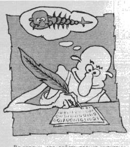

С ложившееся в широких кругах компьютерной и околокомпьютерной общественности представление о вирусах, как о неких зловредных электронных существах, непонятно откуда берущихся на компьютере и непоправимо портящих все, до чего могут дотянуться своими отравленными электронными когтями, имеет мало общего с подлинным положением вещей. На самом деле компьютерный вирус - это просто программа, которая умеет создавать свои функционально идентичные копии. В первый раз термин "компьютерный вирус" был использован в начале 80-х годов доктором математики Фредом Коэном для формального описания одного класса машинных алгоритмов, обладающих способностью к самовоспроизведению. Такие свойства, как способность к разрушению информации, по этому определению к вирусам никакого отношения не имеют. Зато в известном смысле под это определение подпадают даже такие безусловно полезные программные продукты, как операционные системы MsDos и Windows. А вот то, что мы все имеем в виду, говоря о вирусе, является всего-навсего маленькой программкой, способной несанкционированно (т.е. без разрешения пользователя) создавать свои копии и прикреплять их к другим программам. Эта программка обязательно имеет своего автора, и попала на Ваш компьютер извне вместе с какой-нибудь другой безобидной, но зараженной программой, а не "родилась" в нем самостоятельно. От вирусов надо отличать так называемые "троянские программы", которые целиком предназначены для порчи компьютера и данных. Многие вирусы содержат в себе "троянские" фрагменты, что и послужило поводом для распространения мнения о безусловной деструктивности всех вирусов. Современные антивирусы прекрасно обнаруживают и "вирусы" и "трояны", предлагая от первых "вылечить", а вторых "удалить".
О бщественное мнение считает, что вирусы пишут либо "аморальные хулиганы", либо "студенты-дурачки".  В последние годы к анализу проблемы подключились профессиональные социологи, психологи и юристы. И вот к каким выводам они пришли. Все множество авторов вирусов можно условно разделить на три большие группы. Во-первых, это действительно так называемые "студенты" - молодые люди, стремящиеся к самоутверждению. Самостоятельно разобраться в том, как работает вирус - непросто. Поэтому написание саморазмножающейся программы для "студента" сопряжено с "творческим озарением" и "моральной победой над собой". "Студенческие" вирусы как правило просты по устройству, не способны к быстрому распространению, а проявления их ограничиваются выдачей на экран сообщений типа "профессор Иванов - дурак". "Студенты" - самый многочисленный отряд вирусописателей. Во-вторых, это действительно "хулиганы". Их цель - поскорей заявить о своей "крутизне", отомстить кому-нибудь или просто напакостить ближнему. "Творчество" этих аморальных личностей сводится к использованию давно известных вирусных алгоритмов, а подчас - просто автоматических вирусных программ-генераторов (есть и такие). Зато на разрушительные воздействия "хулиганы" не скупятся. К счастью, "хулиганов" на свете немного. Наконец, третья группа - "профессионалы". Это весьма квалифицированные программисты, порой и не такие уж и юные. Ими движет стремление к познанию нового и азарт интеллектуального противодействия авторам антивирусных программ. Вирусы, создаваемые "профессионалами", изощренны, используют малоизвестные особенности операционных систем, способны быстро и скрытно распространяться, а также более-менее эффективно противодействовать попыткам обнаружения и удаления. По замыслу такие вирусы максимально незаметны, т.е. безвредны. Авторы "профессиональных" вирусов часто даже и не выпускают их в "дикую природу", а сразу отправляют вирусологам или публикуют в специализированных электронных журналах. Встречаются и "смешанные" типы. Наиболее опасны для компьютерной общественности "профессиональные хулиганы". Практически все вирусы, которые реально распространяются на пользовательских компьютерах, созданы представителями этой психологической группы. Таков, например, тайваньский студент Чен Инг Хау , написавший весной 1998 г. вирус Win32.CIH. К сожалению, у него имеются и "отечественные" единомышленники. По статье 273 УК РФ автора "деструктивного программного обеспечения" могут посадить лет на 7. Хотя компьютерный вирус по определению не является разрушительным, но некоторые "господа", кажется, делают все, чтобы привести свои "творения" в соответствие с текстом статьи. Ну чтож, мы с удовольствием ознакомимся с их впечатлениями о лесоповале.
В зависимости от того, какие именно программы заражаются, различают несколько типов вирусов. Файловые вирусы заражают программы на Вашем жестком диске и дискетах. Они могут внедряться во все типы исполняемых файлов, а именно: в COM- и EXE-программы, в командные файлы с расширением .BAT, в системные драйверы, в резидентные "хранители экрана" и пр. Базы данных, изображения и чистые тексты заражаться не могут, т.к. не являются программами. К числу файловых относятся и так называемые макро-вирусы, которые могут прикрепляться к Вашим документам и электронным таблицам, заражая содержащиеся в них специализированные программные компоненты (так называемые "макросы"). Для того, чтобы файловый вирус активизировался и начал размножаться, достаточно запустить зараженную программу или открыть зараженный документ. Загрузочные вирусы заражают маленькие программы, которые всегда записаны в системных областях Вашего винчестера и Ваших дискет. Для того, чтобы такой вирус активизировался, достаточно во время перезагрузки "забыть" зараженную дискету в щели дисковода. Вирус немедленно "залезет" в системную область Вашего винчестера, а дальнейшем будет при каждой перезагрузке стартовать из оттуда и заражать все вновь вставляемые в дисковод дискеты. Класс вирусов, именуемых "червями", к другим программам не прикрепляется, а размножается и распространяется по-другому: внедряет себя в оперативную память других компьютеров по сетям, записывает себя целиком внутрь файловых архивов и пр. Чтобы "червь" активизировался, пользователь должен запустить его собственными руками. Представьте себе, что в вашем ZIP-архиве вдруг появилась программа под завлекательным названием PORNO. Если вы, снедаемы любопытством, запустите ее - все, вирус стартовал!
Среди более чем 17000 существующих вирусов (по некоторым оценкам их свыше 26000) на самом деле только несколько сотен могут реально заразить Ваш компьютер. Это связано с тем, что подавляющее большинство вирусов крайне примитивны и обладают очень невысокой способностью к распространению, а многие из оставшихся просто никогда и не бывали в "дикой природе", а сразу после рождения угодили в коллекции вирусологов. Американец Joe Wells ведет и регулярно обновляет так называемый "вайлдлист" - список часто встречающихся на пользовательских компьютерах вирусов. Вирусологи всех стран (от России - Евгений Касперский) регулярно снабжают его конкретной информацией. С весны 1998 г. в России существует свой собственный "вайлдлист", поддерживаемый "Лабораторией Касперского". Ознакомиться со списком российских вирусных "лауреатов" вы можете на сайте http://www.avp.ru. А в Самаре по состоянию на весну-лето 1999 г. наибольшей "популярностью" пользуются следующие вирусы: Bye (ByeBye), Junkie.1027 (DrWhite), Kaczor.4444, Not.586, OneHalf.3544 (Половинка), Stoned.i (SVK), SSI.623, Strike (LzExe), Win32.CIH.1019 (Чернобыль, Вынь-Чих), WM.MtF, WM.Cap (Капелька), WM.Concept, Yankee.2C.a (M2C, Музыкальный). Будьте бдительны!
В каталогах вирусологов можно найти немало вирусов с географическими именами, например Ukraine, Gorlovka, Omsk, Izhevsk и др. Как правило, эти наименования свидетельствуют о той местности, где данный вирус был впервые обнаружен и где он "свирепствует". С весны 1998 г. в каталогах появилась некая Samara.1586. Между тем, как можно убедиться, на самарских компьютерах этого вируса никто и в глаза не видел. В чем же дело? История весьма курьезная. В 1997-98 г. среди участников электронной эхо-конференции relcom.comp.virus проводился конкурс на автора лучших антивирусов. Жюри различными способами добывали обязательно новые, неизвестные еще вирусы, и предлагали их участникам конкурса "на растерзание". Победителем считался тот, кто в короткие сроки разбирался в устройстве "заразы" и писал корректно работающую "лечилку". Последовательно были "повержены" простой файловый вирус (Suburbs), загрузочный (SeeYou) и пермутирующий полиморфик (Ply)... настала очередь для вируса высшей категории сложности - файлово-загрузочного полиморфика. Но вот незадача - жюри никак не могло отыскать подходящего "претендента". Действительно, такие сложные и при этом никому еще не известные вирусы "на дороге не валяются". В конце концов по всему Интернету был кинут клич - помогите найти! И в конце весны 1998 г. устроителям конкурса сообщили адрес одной Интернетовской странички в юго-восточной Азии, откуда можно "скачать" такой вирус. Адресант пожелал остаться анонимом, но сообщил только, что живет в Самарской области. Вирус был немедленно выдвинут в качестве конкурсного, изучен и обезврежен. И в каталогах вирусологов появилась ссылка на наш город. Так Самара "породнилась" с Кореей.
Вопрос не так прост, как может показаться на первый взгляд. Конечно, все мы прекрасно помним, к каким труднопоправимым последствиям может привести деятельность таких вирусов, как Win32.CIH (Чернобыльский). Но вместе с тем существуют вирусы, которые не несут в себе никаких деструктивных функций, а просто размножаются и перемещаются с одной машины на другую. К числу таких вирусов относятся хорошо известные самарским владельцам компьютеров Kaczor и OneHalf. Выходит, к ним можно относиться лояльно? Конечно, нет! Прежде всего, вирус, заразив Ваш компьютер, пользуется частью его ресурсов, "откусывая" часть оперативной памяти, замедляя работу обработчиков прерываний и пр. Во-вторых, даже самый аккуратно написанный безобидный вирус не может быть полностью совместим со всеми программно-аппаратными конфигурациями, что может изредка приводить к неправильной работе отдельных программ, сбоям и т.п. ( Впрочем, я лично наблюдал случаи, когда вирус жил на компьютере годами, оставаясь незамеченным). Наконец, прогресс не стоит на месте, условия меняются, и прекрасно совместимый с MsDos 3.30 и 286/40/EGA вирус скорее всего просто приведет к "вылету" приложения под Windows 95/98. И еще одна причина. Несколько лет назад известный болгарский вирусолог Весселин Бончев провел полномасштабный анализ вопроса и пришел к парадоксальному выводу. Оказывается, так называемые "безобидные" вирусы ежегодно наносят мировой экономике ущерб, исчисляемый сотнями миллионов долларов, но в большинстве случаев потому, что пользователь, узнав о наличии у себя на компьютере вируса, начинает беспокоиться, прекращает работу и тратит массу времени и денег на лечение. Отсюда следует очень простой вывод - вместо того, чтобы лечить вирус, лучше просто не допускать заражения.
Существует два класса средств для борьбы с вирусами: организационные и технические. Организационные методы направлены на предотвращение заражения компьютерным вирусом. Можно порекомендовать ряд простых и действенных мер. Внимательно следите за происхождением всех новых программ и документов на Вашем компьютере. Например, ни в коем случае не следует доверять таким источникам, как CD с "пиратским" программным обеспечением. Не секрет, что к широкому распространению в нашей стране печально знаменитого "импортного" вируса Win32.CIH (а также вирусов TaiPan, Major, Burglar и др.) приложили свои "умелые руки" именно доморощенные "пираты". Активно пользуйтесь такими возможностями, как шторка защиты от записи на дискете, режим "virus protection" в CMOS SETUP Вашего компьютера и "галочка" защиты от исполнения макросов в WinWord 97. Сохранять и переносить WinWord-документы лучше в RTF-формате, его вирусы не заражают. Поставьте на файл NORMAL.DOT атрибут защиты от записи, большинство макро-вирусов не смогут заразить его и, значит, закрепиться на Вашем компьютере. Технические методы направлены на обнаружение, блокирование и удаление вирусов. Эти методы предусматривают использование различных антивирусов. Наиболее известны так называемые "фаги" - программы, предназначенные для поиска и излечения известных вирусов, например DrWeb или AVP. Эффективно работают "инспекторы" - программы, сохраняющие сведения о текущем программно-аппаратном состоянии Вашего компьютера и регулярно следящие за всеми изменениями, например AdInf. Большую пользу могут принести так называемые "мониторы", которые в резидентном режиме постоянно отслеживают и блокируют в процессе работы компьютера все "вирусоподобные" действия программ; к этому классу можно отнести программу AVP Inspector. Редко встречаются и используются преимущественно вирусологами "сканеры" - программы, способные анализировать код программ с целью отыскания неизвестных еще вирусов, например, TBAV. Ряд антивирусных продуктов совмещают в себе различные функции, например, "фаги" DrWeb и AVP умеют также "сканировать" программы, а "монитор" AVP Inspector способен также "инспектировать" содержимое дисковой памяти. Залог эффективной защиты от вирусов - в совместном применении организационных и технических методов.
Антивирусы постоянно тестируются и сравниваются по различным
формальным критериям. По результатам сравнений, выполненным различными
"тестовыми лабораториями", на первом месте оказывается то один, то
Однако, позволю себе поделиться своим мнением по вопросу "какой антивирус лучше". Мнение это весьма субъективно, но основывается на многолетнем опыте работы с некоторыми антивирусами, на результатах самостоятельного тестирования качества их работы и на личном общении с некоторыми людьми, принимавшими участие в разработке различных антивирусных программ. AidsTest Дмитрия Лозинского. Имеется версия только для MsDos. Разработка и поддержка прекращены осенью 1997 г. Морально устарел и не способен обнаруживать и излечивать высокосложные вирусы. Обладает сверхвысокой скоростью сканирования диска. Количество обнаруживаемых и излечиваемых вирусов невелико, но качество их поиска и лечения очень высокое. DrWeb Игоря Данилова. Поддерживается и распространяется московской фирмой "ДиалогНаука". Имеются версии для MsDos и Windows. Очень популярен. Обладает удобным и красивым пользовательским интерфейсом. Содержит очень мощный механизм обнаружения новых вирусов, способный даже автоматически излечивать некоторые просто организованные "новинки"; вместе с тем, в отдельных редких случаях может неправильно распознать и испортить якобы зараженную "новинкой" программу. Количество известных и штатно излечиваемых вирусов сравнительно невелико, но набор их хорошо ориентирован на отечественную вирусную ситуацию. Отличается очень эффективными и изящными алгоритмами обнаружения и лечения высокосложных вирусов, но может пропустить при поиске программу, заведомо зараженную какой-нибудь "неинтересной серостью". Обнаруженные ошибки и недостатки исправляются с задержкой, иногда в течение нескольких месяцев (как, например, в случае с некорректными процедурами обнаружения вирусов Kaczor и WM.Cap). Документация (каталог с описаниями излечимых вирусов) неполная. Обновления вирусных баз происходят в среднем раз в месяц, обновления версий антивируса - несколько раз в год. AVP Евгения Касперского. Создается и распространяется командой "Лаборатория Касперского". Имеются версии для MsDos и Windows. Умеренно популярен. Обладает удобным пользовательским интерфейсом. Не слишком уверенно обнаруживает новые вирусы. Отличается сравнительно невысокой скоростью сканирования диска. Количество известных и штатно излечимых вирусов очень велико. Качество обнаружения и излечения высокое, но бывают задержки до нескольких недель при анализе и разработке алгоритмов излечения для вновь обнаруженных вирусов. Ошибки и недостатки исправляются быстро. Документация характеризуется полнотой и высокими потребительскими качествами ( организована в виде гипертекста). Обновления вирусных баз происходят несколько раз в месяц, обновления версий антивируса - несколько раз в год. Norton Antivirus (NAV) фирмы Symantec. Имеются версии для Windows. Умеренно популярен. Обладает удобным пользовательским интерфейсом. Сочетает функции поиска "новинок", обнаружения и удаления известных вирусов, а также способен отслеживать "подозрительные" изменения в программно-аппаратной конфигурации компьютера. Функция поиска новых вирусов весьма эффективна, но нередко NAV "видит" новые вирусы там, где их нет. Количество обнаруживаемых и штатно излечимых вирусов очень велико. Качество обнаружения и излечения высокое, но для отдельных вирусов вместо "исправления" неоправданно предлагается "удаление". Обновления вирусных баз происходят несколько раз в месяц. Также весьма высокими потребительскими характеристиками обладают антивирусные продукты от DrSolomon и McAffee, но в конце лета 1998 г. года произошло формальное слияние этих фирм, и появится ли какая-нибудь новая антивирусная программа - пока неясно. Старые же практически не совершенствуются, хотя обновление вирусных баз происходит регулярно. Я высказал свое мнение по поводу ряда известных антивирусов, а выводы предлагается сделать читателю самостоятельно. Единственное, что я могу рекомендовать безусловно: никогда ни при каких условиях не пользуйтесь устаревшими (более чем на полгода) или малоизвестными антивирусами! В лучшем случае они просто ничего не найдут, в худшем - испортят инфрормацию на винчестере похлеще любого "троянца".
Все Вы, конечно, прекрасно помните, как 26 апреля 1999 г. активизировался и принес пользователем персональных компьютеров неисчислимые бедствия вирус Win32.CIH. По некоторым оценкам в этот день вышел из строя каждый десятый компьютер, на котором была установлена операционная система Windows 95/98. Можно ли было этого избежать? Конечно! Вирус Win32.CIH получил известность еще с весны 1998 г., когда тайваньский студент Чен Инг Хау разослал в ряд интернетовских эхо-конференций свое новое "творение". Вирус, "живущий" только в среде Windows 95/98, быстро распространился по миру через Интернет. Россия же, как это принято у нас последние 80 лет, пошла своим путем. У нас распространению вируса способствовали главным образом изготовители пиратских CD, которые обильно "засеяли" свою продукцию этим вирусом. Таким образом, входными воротами в Самару для этого вируса послужил наш ипподром. Win32.CIH прекрасно обнаруживался и корректно лечился практически всеми современными антивирусами еще с лета 1998 г. Но по древней русской традиции "пока гром не грянет, мужик не запустит антивирус". Гром грянул 26 апреля 1999 г. Что же делает этот вирус в день памяти Чернобыльской трагедии? Его деструктивные проявления состоят из двух этапов. На первом этапе вирус через механизм VxDCall обильно записывает на винчестер случайную информацию, уничтожая содержимое Master Boot Record, Boot-сектора, обеих таблиц FAT и отдельных фрагментов данных. После этого вирус пытается записать "мусор" в Flash BIOS компьютера. Дело в том, что если раньше BIOS "намертво прошивался" в ПЗУ, то на современных материнских платах он содержится в перезаписываемой Flash-памяти. Под ударом оказались практически все компьютеры с материнскими платами, выпущенными после 1995 г. Конечно, на большинстве таких материнских плат имеется перемычка защиты от записи... но, положа руку на сердце, признайтесь - точно ли Вы знаете, в каком положении она находится? Итак, 26 апреля 1999 года часть компьютеров просто перестала реагировать на включение питания, а те, кому "повезло", могли полюбоваться сообщением о том, что "загрузочный диск не найден". Катастрофа? Конечно! Но все-таки, не стоит паниковать. Еще летом прошлого года фирмы-производители BIOS-ов разработали стратегию борьбы с повреждениями, наносимыми Win32.CIH и ему подобными вирусами. Большинство Flash-BIOS-ов содержат фрагмент, не перезаписываемый ни при каких условиях, так называемый Boot-блок. Этот фрагмент позволяет компьютеру произвести загрузку со специально подготовленной дискеты, двоичный образ которой можно скачать на Интернет-сайте фирмы производителя, например, на http://www.award.com. Надо только проследить, чтобы номер версии "погибшего" BIOS-а точно совпадал с указанным в read.me скачиваемого файла. Загрузившись с этой дискеты и запустив специальную перезаписывающую программу, можно восстановить содержимое Flash-BIOS. Одна тонкость - Boot-блок не умеет инициализировать современные PCI-видеокарты, и для того, чтобы хоть что-то увидеть на дисплее компьютера в процессе восстановления, Вам надо временно заменить ее на старую ISA-карту. Говорят, что некоторые компьютерные фирмы Самары проделывают всю эту операцию за минимальную оплату. Если Вам удалось восстановить Flash-BIOS, то это еще не означает, что Вы сможете немедленно начать работу на Вашем компьютере. Скорее всего, системные области Вашего винчестера сильно повреждены, и машина сможет загрузиться в лучшем случае с дискеты. Частично восстановить информацию помогут программы Fdisk и Unformat из стандартного набора MsDos и программы DiskEdit и NDD из Нортоновских Утилит. Крайне желательно, чтобы программа NDD умела поддерживать "длинные имена", т.е. входила в состав Norton Utilities for Windows 95/98. Так как на одну загрузочную дискетку весь этот набор явно не поместится, лучше всего заниматься "лечением", поставив винчестер вторым в пару к "здоровому". Первым делом восстанавливаем код Master Boot Record при помощи команды Fdisk /mbr. Затем при помощи DiskEdit переносим в сектор 0/1/1 содержимое аналогичного сектора с какого-нибудь "здорового" винчестера. Перезагрузившись после этого, мы видим, что "погибший" диск уже виден в списке доступных, хотя и не читается. Запускаем NDD c ключом /rebuild. Это позволит "перестроить" таблицу размещения (Partition Table) главной загрузочной записи и исправить неправильные поля в Boot-секторе. Все, диск уже "живой", но в данных наблюдается месиво, поскольку таблицы размещения файлов (FAT) все еще испорчены. Теперь можно поступить двояко. Во-первых, можно при помощи DiskEdit вручную синхронизировать содержимое обеих таблиц, либо имея перед глазами список повреждаемых вирусом секторов (который можно найти в Интернете), либо сравнивая обе копии FAT визуально. Работа это сложная, долгая, но приводит в итоге к неплохим результатам. Удается восстановить до 90% информации. Во-вторых, можно заново отформатировать винчестер или просто переразметить его при помощи Fdisk со старыми параметрами, каковая операция очищает FAT-таблицы. После этого программой Unformat в автоматизированном режиме можно попытаться восстановить данные. Эта операция дает несколько худшие результаты, но не требует больших трудовых затрат. Итак, оказалось, что поражение вирусом Win32.СIH не так уж фатально, как это пытаются представить народная молва и некоторые падкие на сенсацию средства массовой информации. Только не надо расслабляться - у вируса Win32.CIH существуют еще две модификации (правда, гораздо меньше распространенные), которые активизируются 26-го числа каждого месяца, а не только в апреле. Будьте бдительны!
Иногда возникает ситуация, когда антивирус предупреждает о возможном присутствии на Вашем компьютере вируса, но не может его вылечить. Это обычно бывает, когда Вы пользуетесь слишком "старой" антивирусной программой. Не беда! Имея голову на плечах, в отдельных случаях можно обойтись и без антивируса. Рассмотрим типичные ситуации. Антивирус сообщает о наличии "заразы" в загрузочном секторе Вашей дискеты. Просто сохраните информацию с дискеты на винчестере, отформатируйте дискету, и скопируйте информацию назад. Более сложный случай - антивирус "ругается" на загрузочный сектор Вашего винчестера. Загрузитесь с чистой дискеты и выполните команду Fdisk /mbr - загрузочный сектор будет исправлен. Одно важное исключение - эту операцию ни в коем случае нельзя производить при наличии на диске вируса OneHalf, поскольку он шифрует информацию на винчестере и, пока машина заражена, "на лету" расшифровывает, так что пользователь не замечает этого. Формально удалив вирус из загрузочного сектора без расшифровки данных, можно потерять информацию. Но вирус OneHalf легко опознать визуально, просмотрев 0-ую дорожку винчестера при помощи программы DiskEdit. Если несколько секторов заполнены непонятным мусором и явственно выделяется надпись "Dis is one half", то лучше все-таки не рисковать. Еще случай - Вам прислали новый WinWord-документ, необходимо срочно работать с ним, а антивирусу он не нравится. Выходим из Win- Word и удаляем файл NORMAL.DOT. При повторном запуске WinWord создаст новый, заведомо здоровый. Для WinWord 6.0/7.0 в меню "Файл" выбираем "Шаблоны", потом "Организатор", потом "Закрыть Файл" и "Открыть Файл". Выбираем в качестве рабочего шаблона подозрительный документ, и если в окошечке появляется список макросов, просто поочередно удаляем их всех при помощи кнопки "Удалить". Документ "здоров", с ним можно спокойно работать. Для WinWord 97 кнопку "Организатор" можно найти, последовательно выбирая пункты меню "Сервис", "Макрос", "Макросы" или "Сервис", "Шаблоны и надстройки". Дальше последовательность действий аналогична.
В отличие от авторов некоторых антивирусных публикаций, я не пытался "напугать" читателя или, наоборот, "развлечь" его. Также в мои задачи не входило склонить читателя к использованию какой-либо конкретной антивирусной программы. Я попытался трезво и объективно рассмотреть проблему, показать, что вирус - это серьезно, но не фатально. Заставить читателя отнестись с компьютерным вирусам серьезно и бороться с ним "не числом, но уменьем". В заключение - несколько советов. Регулярно пользуйтесь свежими антивирусами. Не скапливайте на винчестере залежи старых версий антивирусных программ, они столь же опасны, как и "просроченные" таблетки. Если у Вас есть доступ в Интернет, изредка наведывайтесь на http://www.avp.ru, http://www.dials.ru и http://virus.komi.ru, где можно не только прочитать достоверную информацию о "новинках", но и скачать свежие обновления антивирусных баз. Как это не прискорбно, хакерство и компьютерные вирусы давно стали элементом мировой культуры и объективным фактором в жизни каждого пользователя. И относиться к ним надо примерно так же, как и к погодным условиям - внимательно следить за "прогнозом погоды", своевременно "надевать плащ" и "брать зонтик", а если "простудился" - то "пить правильную микстуру". И не надо их бояться.
(C) К. Климентьев, E-mail : drmad@dr.com. |

 другой антивирус. Относиться к этому следует скептически, т.к. выводы
типа "первый антивирус лучше второго" сильно зависят от списка
критериев сравнения, номера анализируемой версии антивируса и от
личных вкусов и предпочтений представителей "тестовой лаборатории".
Объективно же практически все имеющиеся на мировом рынке программных
продуктов современные антивирусы обладают примерно одинаковыми
потребительскими качествами.
другой антивирус. Относиться к этому следует скептически, т.к. выводы
типа "первый антивирус лучше второго" сильно зависят от списка
критериев сравнения, номера анализируемой версии антивируса и от
личных вкусов и предпочтений представителей "тестовой лаборатории".
Объективно же практически все имеющиеся на мировом рынке программных
продуктов современные антивирусы обладают примерно одинаковыми
потребительскими качествами.